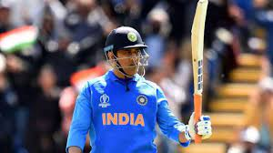
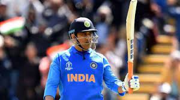

Mahendra Singh Dhoni (born 7 July 1981), is a former international cricketer who captained the Indian national cricket team in limited-overs formats from 2007 to 2017 and in Test cricket from 2008 to 2014. He is currently the captain of Chennai Super Kings (CSK), a franchise based team of Indian Premier League. Having won the triple ICC limited-overs tournament as captain (inaugural 2007 ICC World Twenty20, 2011 ICC Cricket World Cup and 2013 ICC Champions Trophy) and bringing Indian cricket team to number one position in ICC test rankings in 2009,[3] Dhoni is often considered as the greatest captain of Indian cricket team.[4] Furthermore, he led CSK to win 2010, 2011, 2018 and 2021 edition of IPL, becoming second most successful IPL captain after Rohit Sharma
Dhoni made his ODI debut on 23 December 2004 against Bangladesh, and played his first Test a year later against Sri Lanka. In 2007, he took over the ODI captaincy from Rahul Dravid. In test cricket his captaincy record was mixed, successfully leading India to series win against New Zealand (in 2009) and the Border-Gavaskar Trophy (home series in 2010 and 2013) against Australia while losing to Sri Lanka, Australia, England, and South Africa by big margins in away conditions. He announced his retirement from Tests on 30 December 2014[5] and captain of limited-overs game in 2017. Virat Kohli succeeded him as captain in both cases.
Dhoni announced his retirement from international cricket on 15 August 2020
AWARDS/RECORDS
Dhoni has been the recipient of many awards including the ICC ODI Player of the Year award in 2008 and 2009 (the first player to win the award twice), the Rajiv Gandhi Khel Ratna award in 2007 and the Padma Shri, India's fourth highest civilian honour, in 2009.
RECORDS
1. Mahendra Singh Dhoni is the only wicketkeeper to lead a side in 60 Tests.
2. He is the only skipper to win three ICC trophies—ICC World T20, ICC World Cup and ICC Champions Trophy.,
3. Dhoni has scored 3,454 runs as Test skipper, the highest among wicketkeeper captains.
5. He holds the record of most catches—256—by an Indian in Tests.
7. Dhoni has 38 stumpings to his name, joint-highest with India’s Syed Kirmani and third highest in Tests.
8. He is India’s most capped wicketkeeper in Test cricket with 90 appearances.
9. He is the first Indian skipper to score a double ton (224) against Australia in Tests - at Chennai in 2003.
10. He is the only Indian wicketkeeper to score a double ton (224) in Tests.
11. He enjoys a record of most dismissals—294 (256 catches and 38 stumpings) by an Indian in Tests.
12. He is the first Indian stumper to score 300-plus Test runs including 17 dismissals in a series (v England in 2014) >
13. He holds the record of smashing six tons by an Indian wicketkeeper-batsman in Test cricket.
14. Dhoni is the first Indian captain to score a century (124) against Australia in ODIs - at Nagpur in 2009.
15. Dhoni's 124 at Nagpur was also the highest by any captain against Australia at that time.
16. He holds a record for the most number of dismissals—six (five catches, one stumping)—by an Indian wicketkeeper in an ODI innings.
17. He is the only ’keeper to lead his side in 200 ODIs.
18. Dhoni smashed an unbeaten 183 against Sri Lanka at Jaipur in 2005, the highest by a wicketkeeper in ODIs.
19. He dismissed 444 batsmen in ODIs, most by an Indian wicketkeeper (321 catches, 123 stumpings).
20. He is the only Indian to take 300-plus catches (321) in ODIs.
21. Dhoni has led his team to victory in 110 ODIs, the most by an Indian skipper.
22. He holds the record for most sixes by a wicketkeeper (229) in ODIs.
23. He remained not out on 84 occasions in ODIs, the most by any player.
24. He is the only Indian 'keeper to have three stumpings in an ODI innings. He did this thrice in his career.
25. Dhoni has played in 98 T20I matches, the most by a wicketkeeper.
PERSONAL LIFE
Dhoni is an introvert and shy person.[166][169] He was a Ticket checker in South Eastern railway from September 2001 to July 2004 in Kharagpur.[170]
His ancestral village is Lwali, which is in Jaiti taluka of Almora district of the Uttarakhand state. The village has population of 20 to 30 families. His father Pan Singh Dhoni left the village in 1970 for employment. He eventually settled in Ranchi. Dhoni's uncle Dhanpat Singh Dhauni and his cousin Hayat Singh Dhauni still live in Lwali.[171][172]He is a non vegitarian.[173][174]
He married Sakshi Singh Rawat, his rumoured schoolmate[when?][year needed] in DAV Jawahar Vidya Mandir, Shyamali, Ranchi and a native of Dehradun, Uttarakhand, on 4 July 2010.[175][176][177][better source needed] At the time of their marriage, she was studying hotel management and was working as a trainee at the Taj Bengal, Kolkata.[citation needed]After the retirement of Sakshi's father from his tea growing business,[when?]her family shifted to their native place, Dehradun.[178]
The wedding took place one day after the couple got engaged.[179][180] According to the Bollywood actress Bipasha Basu, a close friend[dubious – discuss] of Dhoni, the wedding was planned for months and was not a spur of the moment decision.[181][better source needed] Dhoni became a father on 6 February 2015 to a baby girl. Later named her Ziva.[182]

 
